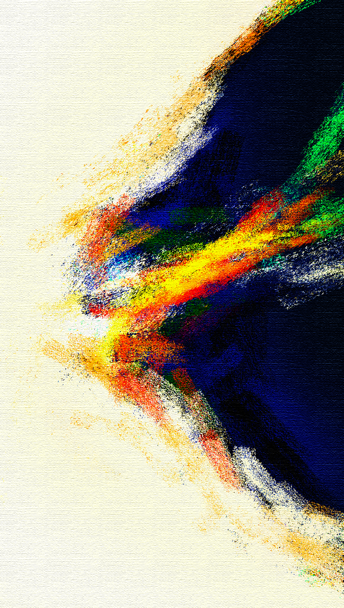

已然得胜
“我将这些事告诉你们，是要叫你们在我里面有平安。在世上，你们有苦难；但你们可以放心，我已经胜了世界。”

祂已经胜过了世界！
想到这句话的时候不由得振奋了。向死而生，祂已然复活。
我觉得不断有力量涌进我的心中，祂已经听了我的祷告。我的软弱祂已看顾，我叩门祂就开门。我求祂让我有所感受，就真的能够感受。我太久没有体会唱诗的喜乐，太久没有在弹琴的时候把顾虑完全放下。我不由得开口，体会到无尽的自由。多么稀奇的体验，除去心中的杂念，即使弹错了也不在意，只是全然沉浸于敬拜之中。我知道我是弹给祂听的，是唱给祂听的，我是真诚的，即使有软弱有不足，但祂乐于接纳。
我突然有很多话对祂说，圣灵真的从祷告中经过了，把我带到与祂的同在之中。有这一瞬真的想要永恒，而在那时所有的不安都消失了。我不属这世界，知道自己属谁。总是想要向着世界死的；与祂同背十架，同走这条路。
光已经胜过了黑暗，祂所在之处，就有平安。